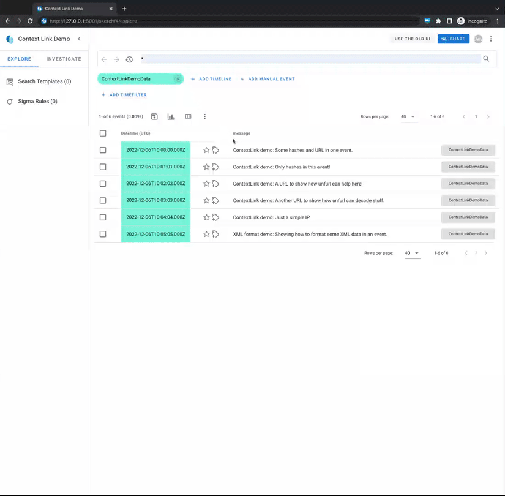

Context Links
The context link feature allows for linking of specific event attributes and values to external lookup services or specific hardcoded enhancement modules, for an easy analyst workflow.
Demo

How-To configure
Per default, all context link configurations are defined in the
context_links.yaml file. In case you want to
provide your own config file, you can define this in the
timesketch.conf by changing the
CONTEXT_LINKS_CONFIG_PATH variable.
Note For external lookups, context links currently just supports services that allow URL parameters for the lookup terms.
Configuration fields
There are two types of context links hardcoded_modules and linked_services.
hardcoded_modules
Hardcoded modules are context links that are directly implemented into Timesketch. For those hardcoded modules, the configuration only allows to activate/deactivate each module and to define on which attribute field the the module should trigger.
A hardcoded module config entry supports the following fields:
# module_name:
#
# match_fields: Type: list[str] | List of field keys where
# this context link should be available. Will
# be checked as case insensitive!
#
# validation_regex: Type: str | OPTIONAL
# A regex pattern that needs to be
# matched by the field value to to make the
# context link available. This can be used to
# validate the format of a value (e.g. a hash).
Currently supported and active by default are:
* xml_formatter
* This module triggers a dialog that will display prettyfied XML values.
* unfurl_graph
* This module will open a dialog that parses an input URL using
unfurl-dfir and displays the
resulting URL graph.
* All parsing is done locally on the Timesketch server. No external lookups
that unfurl provides are enabled.
linked_services
Each context link consists of the following fields:
context_link_name:
short_name: Type: str | The name for the context link.
Will be displayed in the context link submenu.
match_fields: Type: list[str] | List of field keys where
this context link should be available. Will
be checked as case insensitive!
validation_regex: Type: str | OPTIONAL
A regex pattern that needs to be
matched by the field value to to make the
context link available. This can be used to
validate the format of a value (e.g. a hash).
context_link: Type: str | The link that will be opened in a
new tab when the context link is clicked.
IMPORTANT: Add the placeholder "<ATTR_VALUE>"
where the attribute value should be inserted
into the link.
redirect_warning: [TRUE]: If the context link is clicked it will
open a pop-up dialog first that asks the
user if they would like to proceed to
the linked page. (Recommended for
external pages.)
[FALSE]: The linked page will be opened without
any pop-up. (Recommended for internal
pages.)
Test configuration
If we want to test our configuration we can use the
tsctl validate-context-links-conf > here.
Example entries
Below you can find a list of example entries for popular public lookup services.
NOTE: Before running those examples in your environment, verify that the
match_fieldsandvalidation_regexwork with your data! If you add a field to one of the examples that contain a regex, you need to extend this as well.
Virustotal
virustotal:
short_name: 'VirusTotal'
match_fields: ['hash', 'sha256_hash', 'sha256', 'sha1_hash', 'sha1', 'md5_hash', 'md5', 'url']
context_link: 'https://www.virustotal.com/gui/search/<ATTR_VALUE>'
redirect_warning: TRUE
Microsoft Event ID lookup
Via the MS Threat Protection documentation:
mseventid:
short_name: 'MS-TP eventID'
match_fields: ['event_identifier', 'message_identifier']
context_link: 'https://learn.microsoft.com/en-us/windows/security/threat-protection/auditing/event-<ATTR_VALUE>'
redirect_warning: TRUE
Via Ultimate Windows Security:
uws-eventid:
short_name: 'UWS eventID'
match_fields: ['event_identifier', 'message_identifier']
context_link: 'https://www.ultimatewindowssecurity.com/securitylog/encyclopedia/event.aspx?eventID=<ATTR_VALUE>'
redirect_warning: TRUE
urlscan.io
urlscanio:
short_name: 'urlscan.io'
match_fields: ['url', 'uri']
validation_regex: '/((([A-Za-z]{3,9}:(?:\/\/)?)(?:[\-;:&=\+\$,\w]+@)?[A-Za-z0-9\.\-]+|(?:www\.|[\-;:&=\+\$,\w]+@)[A-Za-z0-9\.\-]+)((?:\/[\+~%\/\.\w\-_]*)?\??(?:[\-\+=&;%@\.\w_]*)#?(?:[\.\!\/\\\w]*))?)/i'
context_link: 'https://urlscan.io/search/#<ATTR_VALUE>'
redirect_warning: TRUE
abuse.ch URLhaus
urlhaus:
short_name: 'URLhaus'
match_fields: ['hash', 'sha256_hash', 'sha256', 'sha1_hash', 'sha1', 'md5_hash', 'md5', 'url']
context_link: 'https://urlhaus.abuse.ch/browse.php?search=<ATTR_VALUE>'
redirect_warning: TRUE
AlienVault OTX
alienvault:
short_name: 'alienvault OTX'
match_fields: ['hash', 'sha256_hash', 'sha256', 'sha1_hash', 'sha1', 'md5_hash', 'md5', 'url', 'domain', 'ipv4']
context_link: 'https://otx.alienvault.com/browse/global/pulses?q=<ATTR_VALUE>'
redirect_warning: TRUE